Last updated: 2019-06-25
Checks: 7 0
Knit directory: OzSingleCells2019/
This reproducible R Markdown analysis was created with workflowr (version 1.4.0). The Checks tab describes the reproducibility checks that were applied when the results were created. The Past versions tab lists the development history.
Great! Since the R Markdown file has been committed to the Git repository, you know the exact version of the code that produced these results.
Great job! The global environment was empty. Objects defined in the global environment can affect the analysis in your R Markdown file in unknown ways. For reproduciblity it’s best to always run the code in an empty environment.
The command set.seed(20190619) was run prior to running the code in the R Markdown file. Setting a seed ensures that any results that rely on randomness, e.g. subsampling or permutations, are reproducible.
Great job! Recording the operating system, R version, and package versions is critical for reproducibility.
Nice! There were no cached chunks for this analysis, so you can be confident that you successfully produced the results during this run.
Great job! Using relative paths to the files within your workflowr project makes it easier to run your code on other machines.
Great! You are using Git for version control. Tracking code development and connecting the code version to the results is critical for reproducibility. The version displayed above was the version of the Git repository at the time these results were generated.
Note that you need to be careful to ensure that all relevant files for the analysis have been committed to Git prior to generating the results (you can use wflow_publish or wflow_git_commit). workflowr only checks the R Markdown file, but you know if there are other scripts or data files that it depends on. Below is the status of the Git repository when the results were generated:
Ignored files:
Ignored: .DS_Store
Ignored: .Rproj.user/
Ignored: ._.DS_Store
Ignored: analysis/cache/
Ignored: data/._antibody_genes.tsv
Ignored: data/._antibody_genes.txt
Ignored: docs/.DS_Store
Ignored: docs/._.DS_Store
Ignored: output/03-comparison.Rmd/
Ignored: packrat/lib-R/
Ignored: packrat/lib-ext/
Ignored: packrat/lib/
Ignored: packrat/src/
Note that any generated files, e.g. HTML, png, CSS, etc., are not included in this status report because it is ok for generated content to have uncommitted changes.
These are the previous versions of the R Markdown and HTML files. If you’ve configured a remote Git repository (see ?wflow_git_remote), click on the hyperlinks in the table below to view them.
| File | Version | Author | Date | Message |
|---|---|---|---|---|
| Rmd | d3dced1 | Luke Zappia | 2019-06-25 | Add pairs plots to comparison |
| Rmd | fdabdcc | Luke Zappia | 2019-06-24 | Add antibody/gene comparison |
| html | fdabdcc | Luke Zappia | 2019-06-24 | Add antibody/gene comparison |
#### LIBRARIES ####
# Package conflicts
library("conflicted")
# Single-cell
library("SingleCellExperiment")
library("scater")
# File paths
library("fs")
library("here")
# Presentation
library("knitr")
library("jsonlite")
# Tidyverse
library("tidyverse")
### CONFLICT PREFERENCES ####
conflict_prefer("path", "fs")
conflict_prefer("filter", "dplyr")
conflict_prefer("mutate", "dplyr")
conflict_prefer("rename", "dplyr")
### SOURCE FUNCTIONS ####
source(here("R/output.R"))
### OUTPUT DIRECTORY ####
OUT_DIR <- here("output", DOCNAME)
dir_create(OUT_DIR)
#### SET GGPLOT THEME ####
theme_set(theme_minimal())
#### SET PATHS ####
source(here("R/set_paths.R"))In this document we are going to compare the RNA-seq and CITE data to see how similar they are to each other.
if (all(file_exists(c(PATHS$sce_qc, PATHS$cite_qc)))) {
sce <- read_rds(PATHS$sce_qc)
cite <- read_rds(PATHS$cite_qc)
} else {
stop("Filtered dataset is missing. ",
"Please run '02-quality-control.Rmd' first.",
call. = FALSE)
}First let’s check that if all the CITE targets are present in the RNA-seq data (and if we can match them up).
targets <- str_remove(rownames(cite), "Anti-")
kable(table(targets %in% rownames(sce)), col.names = c("Present", "Count"))| Present | Count |
|---|---|
| FALSE | 60 |
| TRUE | 36 |
That doesn’t look great, not many of our antibody names match our gene names. After looking at the list it seems that many of the antibody names are obsolute gene symbols or other identifiers. I have manually matched these up with the (hopefully) appropriate genes, mainly using the Gene cards and Novus biologicals websites. Let’s read in this list and use it to match up our datasets.
anti_gene <- read_tsv(PATHS$anti_gene,
col_types = cols(
Antibody = col_character(),
Gene = col_character()
))
anti_geneThere are still a couple of genes that aren’t present in the RNA-seq dataset (possible because they aren’t expressed) but this is a much better match. There are also a few cases were the pairing is ambiguous, either because multiple antibodies target different isoforms of the same gene or an antibody matches multiple genes (for example if it targets a protein complex). We will ignore these for the rest of this document.
anti_gene <- anti_gene %>%
filter(Gene %in% rownames(sce)) %>%
group_by(Gene) %>%
filter(n() == 1) %>%
group_by(Antibody) %>%
filter(n() == 1) %>%
ungroup()
sce_match <- sce[anti_gene$Gene, ]
cite_match <- cite[paste0("Anti-", anti_gene$Antibody), ]
rownames(cite_match) <- anti_gene$Antibody
cells_match <- colSums(counts(sce_match)) > 0 & colSums(counts(cite_match)) > 0
sce_match <- sce_match[, cells_match]
cite_match <- cite_match[, cells_match]
sizeFactors(sce_match) <- librarySizeFactors(sce_match)
sce_match <- normalize(sce_match)
sizeFactors(cite_match) <- librarySizeFactors(cite_match)
cite_match <- normalize(cite_match)Removing these leaves us with 82 unambiguous antibody-gene pairs.
Now that we have matched up the two datasets we want to look at how similar the RNA and protein expression is.
anti_gene <- anti_gene %>%
mutate(
AntiMean = rowMeans(logcounts(cite_match)[Antibody, ]),
AntiVar = rowVars(logcounts(cite_match)[Antibody, ]),
AntiTotal = rowSums(counts(cite_match)[Antibody, ]),
AntiProp = rowMeans(counts(cite_match)[Antibody, ] > 0)
) %>%
mutate(
GeneMean = rowMeans(logcounts(sce_match)[Gene, ]),
GeneVar = rowVars(as.matrix(logcounts(sce_match)[Gene, ])),
GeneTotal = rowSums(counts(sce_match)[Gene, ]),
GeneProp = rowMeans(counts(sce)[Gene, ] > 0)
) %>%
mutate(
Corr = map2_dbl(
Antibody, Gene, function(x, y) {
cor(
counts(cite)[paste0("Anti-", x), ],
counts(sce)[y, ],
method = "spearman"
)
}
)
)ggplot(anti_gene, aes(x = GeneMean, y = AntiMean, colour = Corr)) +
geom_point(size = 6, alpha = 0.8) +
geom_smooth(method = "loess") +
geom_abline(intercept = 0, slope = 1, colour = "red") +
scale_colour_viridis_c() +
labs(
title = "Comparison of mean expression",
x = "Gene mean normalised logcounts",
y = "Antibody mean normalised logcounts",
colour = "Spearman\ncorrelation"
)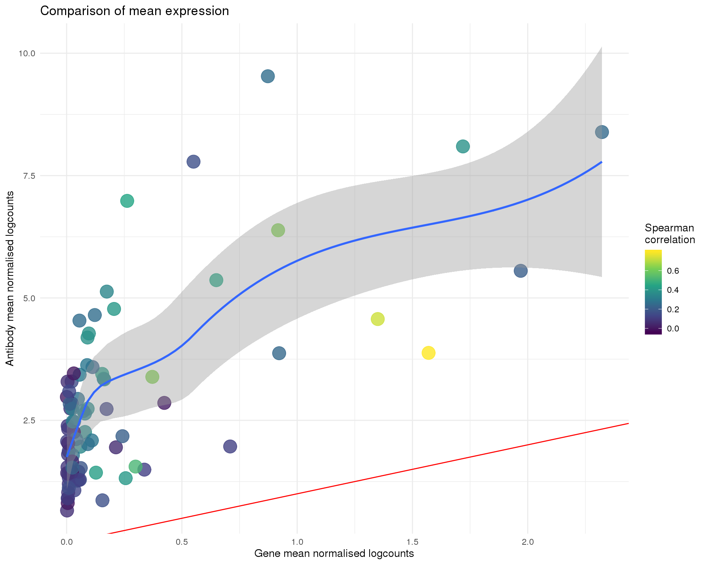
| Version | Author | Date |
|---|---|---|
| fdabdcc | Luke Zappia | 2019-06-24 |
ggplot(anti_gene, aes(x = GeneVar, y = AntiVar, colour = Corr)) +
geom_point(size = 6, alpha = 0.8) +
geom_smooth(method = "loess") +
geom_abline(intercept = 0, slope = 1, colour = "red") +
scale_colour_viridis_c() +
labs(
title = "Comparison of variance",
x = "Gene variance (normalised logcounts)",
y = "Antibody variance (normalised logcounts)",
colour = "Spearman\ncorrelation"
)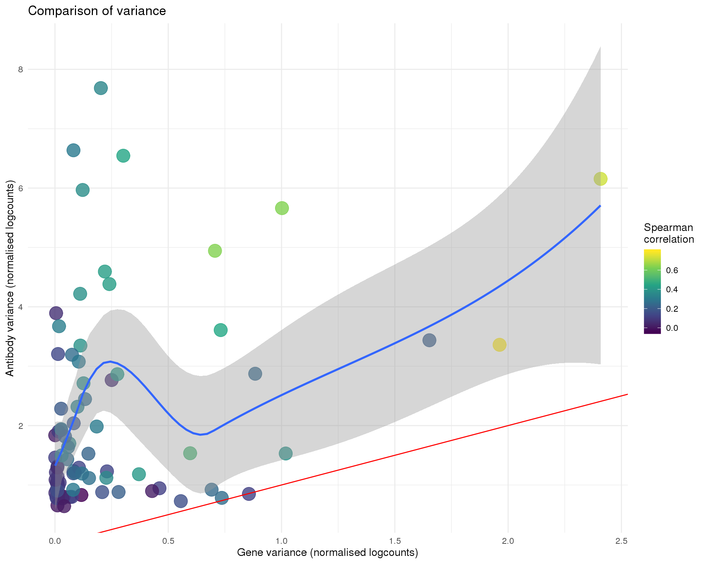
| Version | Author | Date |
|---|---|---|
| fdabdcc | Luke Zappia | 2019-06-24 |
feat_data <- anti_gene %>%
select(Feature = Antibody, Mean = AntiMean, Var = AntiVar, Corr) %>%
mutate(Type = "Antibody") %>%
bind_rows(
anti_gene %>%
select(Feature = Gene, Mean = GeneMean, Var = GeneVar, Corr) %>%
mutate(Type = "Gene")
)
ggplot(feat_data, aes(x = Mean, y = Var, colour = Corr)) +
geom_point(size = 6, alpha = 0.8) +
geom_smooth(method = "loess") +
scale_colour_viridis_c() +
facet_wrap(~ Type) +
labs(
title = "Mean-variance relationship",
x = "Mean (normalised logcounts)",
y = "Variance (normalised logcounts)",
colour = "Spearman\ncorrelation"
)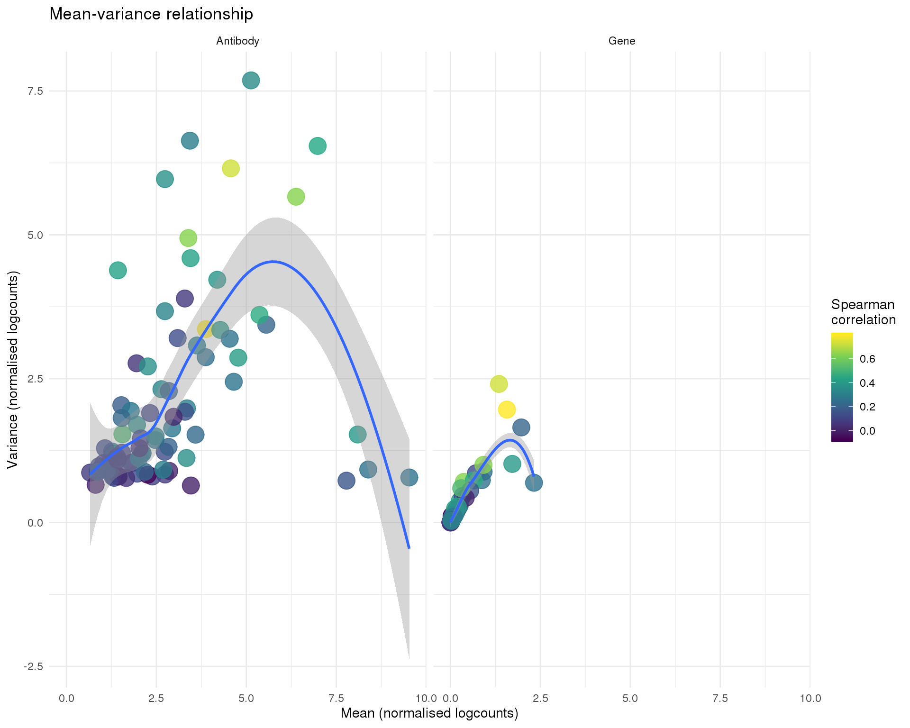
| Version | Author | Date |
|---|---|---|
| fdabdcc | Luke Zappia | 2019-06-24 |
ggplot(anti_gene, aes(x = GeneTotal, y = AntiTotal, colour = Corr)) +
geom_point(size = 6, alpha = 0.8) +
geom_smooth(method = "loess") +
scale_x_log10() +
scale_y_log10() +
scale_colour_viridis_c() +
labs(
title = "Comparison of total counts",
x = "Gene total",
y = "Antibody total",
colour = "Spearman\ncorrelation"
)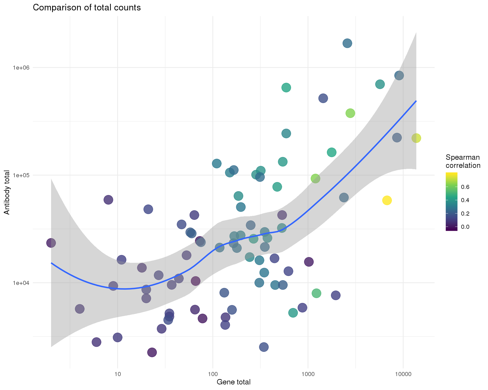
| Version | Author | Date |
|---|---|---|
| fdabdcc | Luke Zappia | 2019-06-24 |
ggplot(anti_gene, aes(x = GeneProp, y = AntiProp, colour = Corr)) +
geom_point(size = 6, alpha = 0.8) +
geom_abline(intercept = 0, slope = 1, colour = "red") +
geom_smooth(method = "loess") +
xlim(0, 1) +
ylim(0, 1.2) +
scale_colour_viridis_c() +
labs(
title = "Comparison of proportion expressed",
x = "Gene proportion",
y = "Antibody proportion",
colour = "Spearman\ncorrelation"
)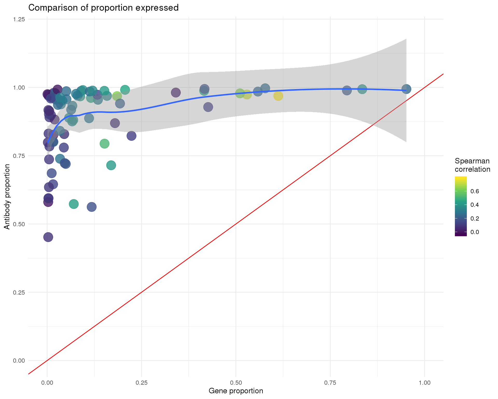
| Version | Author | Date |
|---|---|---|
| fdabdcc | Luke Zappia | 2019-06-24 |
Plots of expression for individual cells. Orange cross shows the mean and purple cross the nonzero mean.
anti_expr <- reshape2::melt(
logcounts(cite_match),
varnames = c("Antibody", "Barcode"),
value.name = "AntiExpr"
)
gene_expr <- reshape2::melt(
as.matrix(logcounts(sce_match)),
varnames = c("Gene", "Barcode"),
value.name = "GeneExpr"
)
expr <- anti_expr %>%
rename() %>%
mutate(
Gene = gene_expr$Gene,
GeneExpr = gene_expr$GeneExpr
) %>%
mutate(Anti_Gene = paste(Antibody, Gene, sep = "_")) %>%
select(Barcode, Anti_Gene, Antibody, Gene, AntiExpr, GeneExpr)
nonzero_mean <- function(x) {
mean(x[x > 0])
}
plot_expr <- function(expr, pairs) {
expr_filt <- expr %>%
filter(Anti_Gene %in% pairs)
expr_means <- expr_filt %>%
group_by(Anti_Gene) %>%
summarise(
AntiExpr = mean(AntiExpr),
GeneExpr = mean(GeneExpr)
)
expr_nonzero <- expr_filt %>%
group_by(Anti_Gene) %>%
summarise(
AntiExpr = nonzero_mean(AntiExpr),
GeneExpr = nonzero_mean(GeneExpr)
)
ggplot(expr_filt, aes(x = GeneExpr, y = AntiExpr)) +
geom_point(alpha = 0.4) +
geom_point(data = expr_nonzero, size = 10,
colour = "purple", shape = 3, stroke = 1) +
geom_point(data = expr_means, size = 10,
colour = "orange", shape = 3, stroke = 1) +
geom_abline(intercept = 0, slope = 1, colour = "red") +
labs(
x = "Gene expression (normalised logcounts)",
y = "Antibody expression (normalised logcounts)"
) +
facet_wrap(~ Anti_Gene)
}
pairs <- unique(expr$Anti_Gene)
pair_sets <- split(pairs, rep(1:7, each = 12)[1:length(pairs)])
src_list <- lapply(seq_along(pair_sets), function(id) {
src <- c(
"#### Page {{id}} {.unnumbered}",
"```{r pairs-{{id}}}",
"plot_expr(expr, pair_sets[[{{id}}]])",
"```",
""
)
knit_expand(text = src)
})
out <- knit_child(text = unlist(src_list), options = list(cache = FALSE))plot_expr(expr, pair_sets[[1]])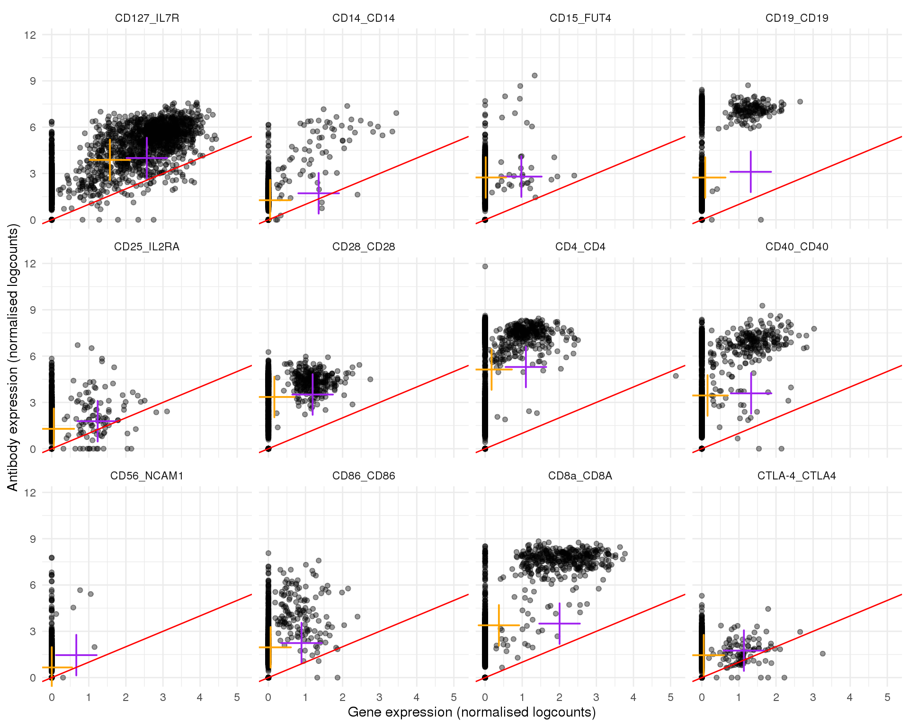
plot_expr(expr, pair_sets[[2]])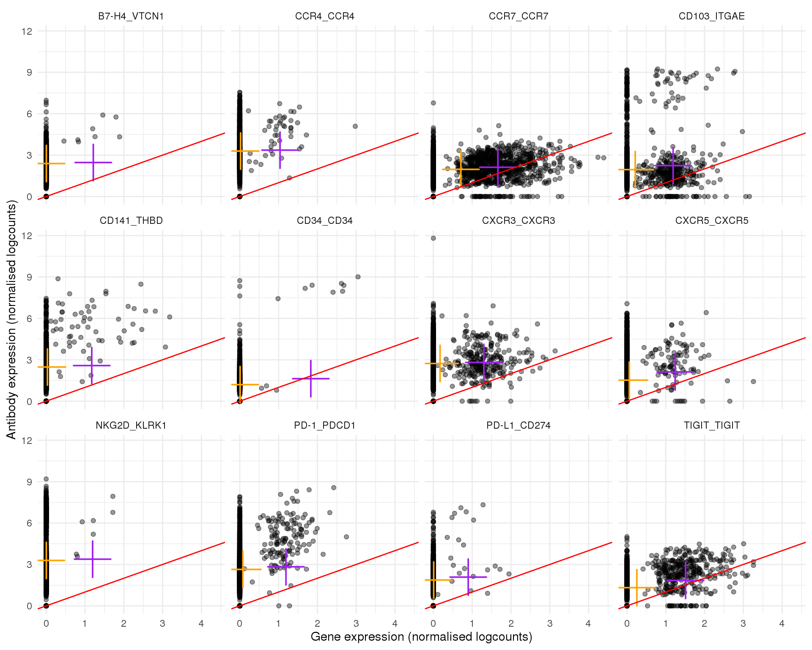
plot_expr(expr, pair_sets[[3]])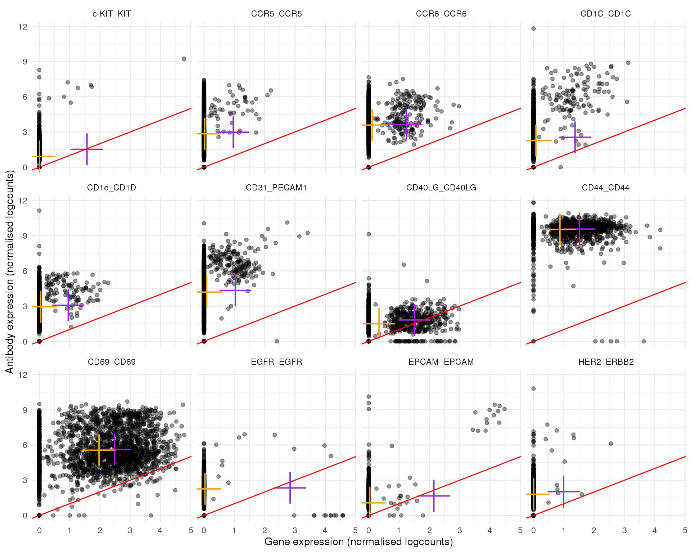
plot_expr(expr, pair_sets[[4]])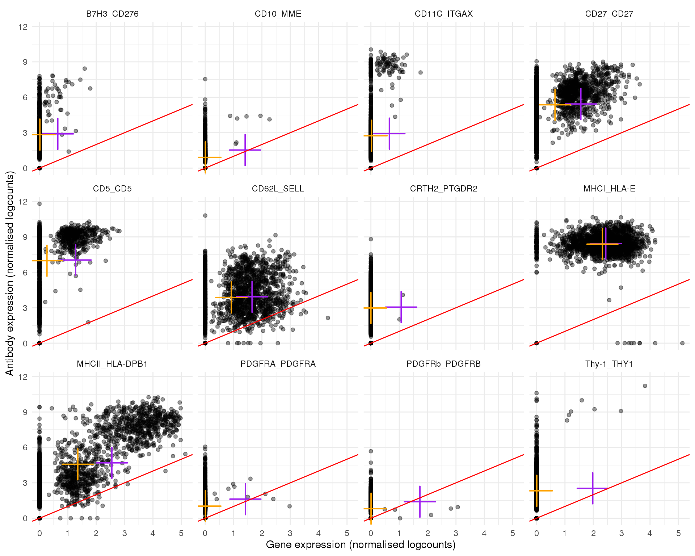
plot_expr(expr, pair_sets[[5]])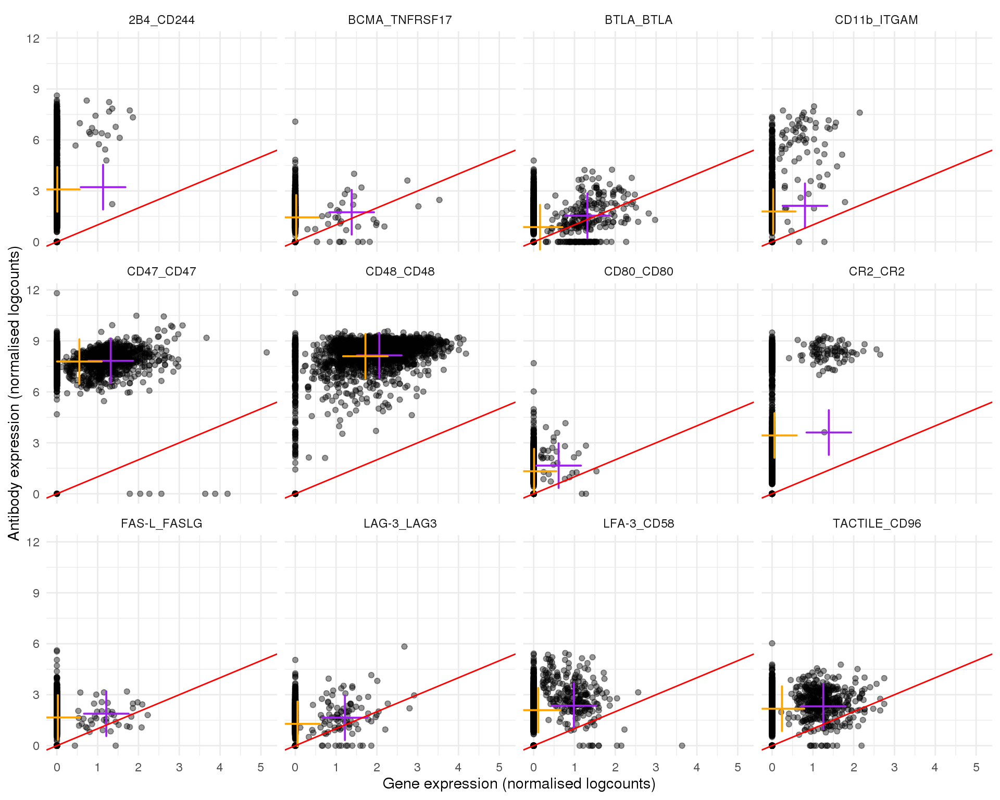
plot_expr(expr, pair_sets[[6]])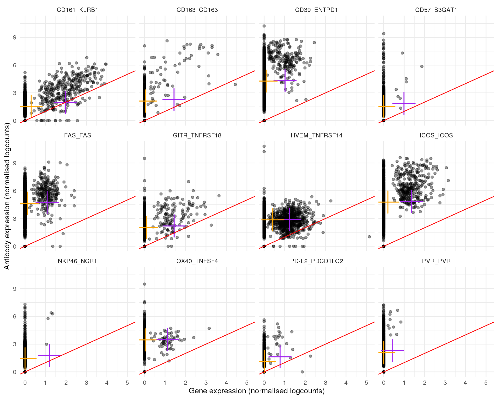
plot_expr(expr, pair_sets[[7]])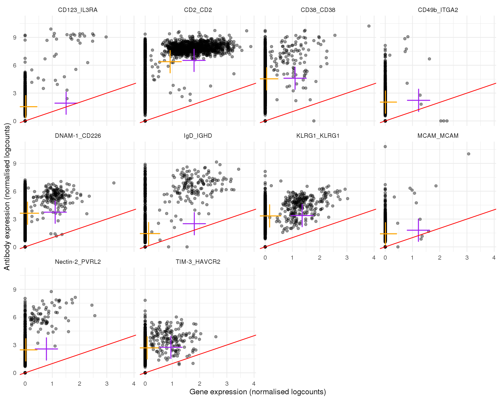
cell_data <- tibble(Barcode = colnames(cite_match)) %>%
mutate(
AntiTotal = colSums(counts(cite_match)[, Barcode])
) %>% mutate(
GeneTotal = colSums(counts(sce_match)[, Barcode])
) %>%
mutate(
Corr = map_dbl(
Barcode, function(x) {
cor(
counts(cite_match)[, x],
counts(sce_match)[, x],
method = "spearman"
)
}
)
)ggplot(cell_data, aes(x = GeneTotal, y = AntiTotal, colour = Corr)) +
geom_point(size = 4, alpha = 0.8, shape = 18) +
geom_smooth(method = "loess") +
scale_x_log10() +
scale_y_log10() +
scale_colour_viridis_c() +
labs(
title = "Comparison of total counts",
x = "Gene total",
y = "Antibody total",
colour = "Spearman\ncorrelation"
)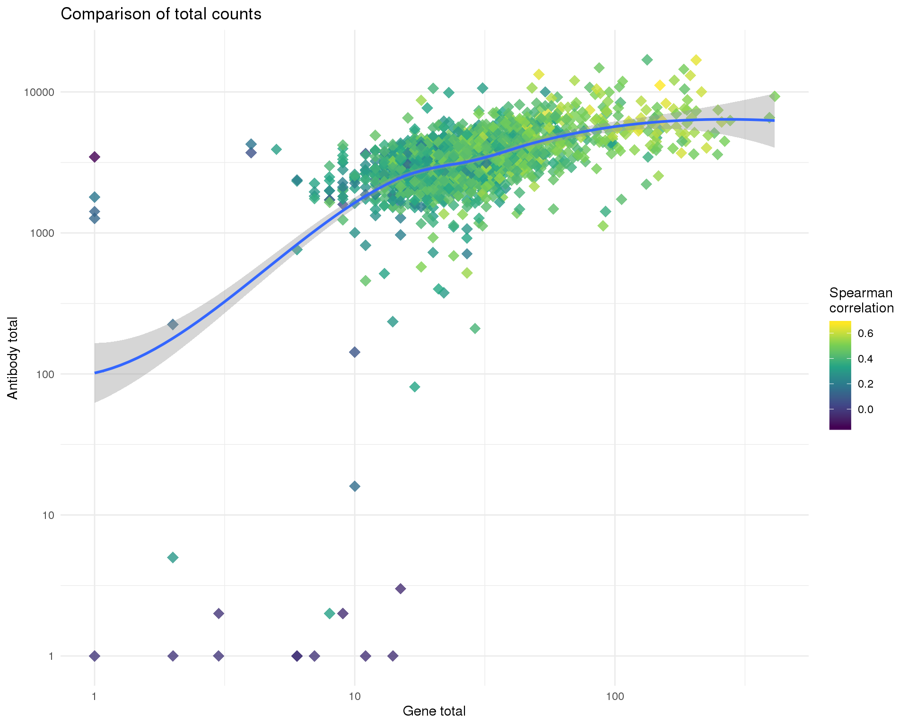
| Version | Author | Date |
|---|---|---|
| fdabdcc | Luke Zappia | 2019-06-24 |
This table describes parameters used and set in this document.
params <- list(
)
params <- toJSON(params, pretty = TRUE)
kable(fromJSON(params))This table describes the output files produced by this document. Right click and Save Link As… to download the results.
kable(data.frame(
File = c(
download_link("parameters.json", OUT_DIR)
),
Description = c(
"Parameters set and used in this analysis"
)
))| File | Description |
|---|---|
| parameters.json | Parameters set and used in this analysis |
sessioninfo::session_info()─ Session info ──────────────────────────────────────────────────────────
setting value
version R version 3.6.0 (2019-04-26)
os CentOS release 6.7 (Final)
system x86_64, linux-gnu
ui X11
language (EN)
collate en_US.UTF-8
ctype en_US.UTF-8
tz Australia/Melbourne
date 2019-06-25
─ Packages ──────────────────────────────────────────────────────────────
! package * version date lib source
assertthat 0.2.1 2019-03-21 [1] CRAN (R 3.6.0)
backports 1.1.4 2019-04-10 [1] CRAN (R 3.6.0)
beeswarm 0.2.3 2016-04-25 [1] CRAN (R 3.6.0)
Biobase * 2.44.0 2019-05-02 [1] Bioconductor
BiocGenerics * 0.30.0 2019-05-02 [1] Bioconductor
BiocNeighbors 1.2.0 2019-05-02 [1] Bioconductor
BiocParallel * 1.18.0 2019-05-03 [1] Bioconductor
BiocSingular 1.0.0 2019-05-02 [1] Bioconductor
bitops 1.0-6 2013-08-17 [1] CRAN (R 3.6.0)
broom 0.5.2 2019-04-07 [1] CRAN (R 3.6.0)
cellranger 1.1.0 2016-07-27 [1] CRAN (R 3.6.0)
cli 1.1.0 2019-03-19 [1] CRAN (R 3.6.0)
colorspace 1.4-1 2019-03-18 [1] CRAN (R 3.6.0)
conflicted * 1.0.3 2019-05-01 [1] CRAN (R 3.6.0)
crayon 1.3.4 2017-09-16 [1] CRAN (R 3.6.0)
DelayedArray * 0.10.0 2019-05-02 [1] Bioconductor
DelayedMatrixStats 1.6.0 2019-05-02 [1] Bioconductor
digest 0.6.19 2019-05-20 [1] CRAN (R 3.6.0)
dplyr * 0.8.1 2019-05-14 [1] CRAN (R 3.6.0)
evaluate 0.14 2019-05-28 [1] CRAN (R 3.6.0)
forcats * 0.4.0 2019-02-17 [1] CRAN (R 3.6.0)
fs * 1.3.1 2019-05-06 [1] CRAN (R 3.6.0)
generics 0.0.2 2018-11-29 [1] CRAN (R 3.6.0)
GenomeInfoDb * 1.20.0 2019-05-02 [1] Bioconductor
GenomeInfoDbData 1.2.1 2019-06-19 [1] Bioconductor
GenomicRanges * 1.36.0 2019-05-02 [1] Bioconductor
ggbeeswarm 0.6.0 2017-08-07 [1] CRAN (R 3.6.0)
ggplot2 * 3.2.0 2019-06-16 [1] CRAN (R 3.6.0)
git2r 0.25.2 2019-03-19 [1] CRAN (R 3.6.0)
glue 1.3.1 2019-03-12 [1] CRAN (R 3.6.0)
gridExtra 2.3 2017-09-09 [1] CRAN (R 3.6.0)
gtable 0.3.0 2019-03-25 [1] CRAN (R 3.6.0)
haven 2.1.0 2019-02-19 [1] CRAN (R 3.6.0)
here * 0.1 2017-05-28 [1] CRAN (R 3.6.0)
highr 0.8 2019-03-20 [1] CRAN (R 3.6.0)
hms 0.4.2 2018-03-10 [1] CRAN (R 3.6.0)
htmltools 0.3.6 2017-04-28 [1] CRAN (R 3.6.0)
httr 1.4.0 2018-12-11 [1] CRAN (R 3.6.0)
IRanges * 2.18.1 2019-05-31 [1] Bioconductor
irlba 2.3.3 2019-02-05 [1] CRAN (R 3.6.0)
jsonlite * 1.6 2018-12-07 [1] CRAN (R 3.6.0)
knitr * 1.23 2019-05-18 [1] CRAN (R 3.6.0)
labeling 0.3 2014-08-23 [1] CRAN (R 3.6.0)
P lattice 0.20-38 2018-11-04 [5] CRAN (R 3.6.0)
lazyeval 0.2.2 2019-03-15 [1] CRAN (R 3.6.0)
lubridate 1.7.4 2018-04-11 [1] CRAN (R 3.6.0)
magrittr 1.5 2014-11-22 [1] CRAN (R 3.6.0)
P Matrix 1.2-17 2019-03-22 [5] CRAN (R 3.6.0)
matrixStats * 0.54.0 2018-07-23 [1] CRAN (R 3.6.0)
memoise 1.1.0 2017-04-21 [1] CRAN (R 3.6.0)
modelr 0.1.4 2019-02-18 [1] CRAN (R 3.6.0)
munsell 0.5.0 2018-06-12 [1] CRAN (R 3.6.0)
P nlme 3.1-139 2019-04-09 [5] CRAN (R 3.6.0)
pillar 1.4.1 2019-05-28 [1] CRAN (R 3.6.0)
pkgconfig 2.0.2 2018-08-16 [1] CRAN (R 3.6.0)
plyr 1.8.4 2016-06-08 [1] CRAN (R 3.6.0)
purrr * 0.3.2 2019-03-15 [1] CRAN (R 3.6.0)
R6 2.4.0 2019-02-14 [1] CRAN (R 3.6.0)
Rcpp 1.0.1 2019-03-17 [1] CRAN (R 3.6.0)
RCurl 1.95-4.12 2019-03-04 [1] CRAN (R 3.6.0)
readr * 1.3.1 2018-12-21 [1] CRAN (R 3.6.0)
readxl 1.3.1 2019-03-13 [1] CRAN (R 3.6.0)
reshape2 1.4.3 2017-12-11 [1] CRAN (R 3.6.0)
rlang 0.3.4 2019-04-07 [1] CRAN (R 3.6.0)
rmarkdown 1.13 2019-05-22 [1] CRAN (R 3.6.0)
rprojroot 1.3-2 2018-01-03 [1] CRAN (R 3.6.0)
rstudioapi 0.10 2019-03-19 [1] CRAN (R 3.6.0)
rsvd 1.0.1 2019-06-02 [1] CRAN (R 3.6.0)
rvest 0.3.4 2019-05-15 [1] CRAN (R 3.6.0)
S4Vectors * 0.22.0 2019-05-02 [1] Bioconductor
scales 1.0.0 2018-08-09 [1] CRAN (R 3.6.0)
scater * 1.12.2 2019-05-24 [1] Bioconductor
sessioninfo 1.1.1 2018-11-05 [1] CRAN (R 3.6.0)
SingleCellExperiment * 1.6.0 2019-05-02 [1] Bioconductor
stringi 1.4.3 2019-03-12 [1] CRAN (R 3.6.0)
stringr * 1.4.0 2019-02-10 [1] CRAN (R 3.6.0)
SummarizedExperiment * 1.14.0 2019-05-02 [1] Bioconductor
tibble * 2.1.3 2019-06-06 [1] CRAN (R 3.6.0)
tidyr * 0.8.3 2019-03-01 [1] CRAN (R 3.6.0)
tidyselect 0.2.5 2018-10-11 [1] CRAN (R 3.6.0)
tidyverse * 1.2.1 2017-11-14 [1] CRAN (R 3.6.0)
vipor 0.4.5 2017-03-22 [1] CRAN (R 3.6.0)
viridis 0.5.1 2018-03-29 [1] CRAN (R 3.6.0)
viridisLite 0.3.0 2018-02-01 [1] CRAN (R 3.6.0)
whisker 0.3-2 2013-04-28 [1] CRAN (R 3.6.0)
withr 2.1.2 2018-03-15 [1] CRAN (R 3.6.0)
workflowr 1.4.0 2019-06-08 [1] CRAN (R 3.6.0)
xfun 0.7 2019-05-14 [1] CRAN (R 3.6.0)
xml2 1.2.0 2018-01-24 [1] CRAN (R 3.6.0)
XVector 0.24.0 2019-05-02 [1] Bioconductor
yaml 2.2.0 2018-07-25 [1] CRAN (R 3.6.0)
zlibbioc 1.30.0 2019-05-02 [1] Bioconductor
[1] /group/bioi1/luke/analysis/OzSingleCells2019/packrat/lib/x86_64-pc-linux-gnu/3.6.0
[2] /group/bioi1/luke/analysis/OzSingleCells2019/packrat/lib-ext/x86_64-pc-linux-gnu/3.6.0
[3] /group/bioi1/luke/analysis/OzSingleCells2019/packrat/lib-R/x86_64-pc-linux-gnu/3.6.0
[4] /home/luke.zappia/R/x86_64-pc-linux-gnu-library/3.6
[5] /usr/local/installed/R/3.6.0/lib64/R/library
P ── Loaded and on-disk path mismatch.